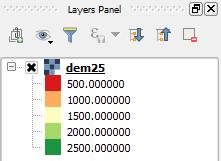

Now, the legend should look better, with 500 m intervals. If you have changed the number of classes to 10, it would have created 250 m intervals instead.

In the next steps, we will modify the color interpolation method.